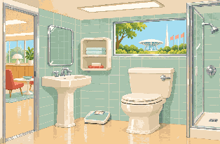

Historical first pass: House speaker design and layering superseded. Open current intercom and complete-portrait review. Original images are preserved below.
House of Tomorrow
Chapter 1 · first-batch private artwork review · 15 November 2026
Five generated candidates. Owner visual approval pending.
Warm, desirable 1960s future domestic living. Machine behavior supplies the unease. This House deliberately differs from reception in color and design.
All 20 asset plans · Story/art requirements report · Exact generation prompts · Dimensions, palettes, provenance and hashes · Checks and limits
Three-room consistency
All three scenes are displayed below at their native 314×206. Check ivory finishes, blond cabinetry, aqua molded furniture, thin aluminum trim and clear domestic purpose. Four settings; three family chairs remain empty. No people appear in the scenes.
 Foyer · native 314×206
Foyer · native 314×206 Dining room · native 314×206
Dining room · native 314×206
Bathroom · native 314×206Download contact sheet
A · Foyer
314 × 206 · RGB · generated — owner review pending · 99 visible RGB colors
Download candidate PNG · Preserved generation source
View exact 4× nearest-neighbor (1256×824)
B · Dining room
314 × 206 · RGB · generated — owner review pending · 88 visible RGB colors
Download candidate PNG · Preserved generation source
View exact 4× nearest-neighbor (1256×824)
C · Bathroom
314 × 206 · RGB · generated — owner review pending · 97 visible RGB colors
Download candidate PNG · Preserved generation source
View exact 4× nearest-neighbor (1256×824)
D · Foyer portrait background
564 × 278 · RGB · generated — owner review pending · 294 visible RGB colors
Download candidate PNG · Preserved generation source
E · House speaker foreground
564 × 278 · RGBA · generated — owner review pending · 153 visible RGB colors
Download candidate PNG · Preserved generation source
Preserved earlier versions
Superseded generation sources — not current candidates
The reception-like first direction and vent-like speakers were superseded by owner direction. Originals remain available for comparison.